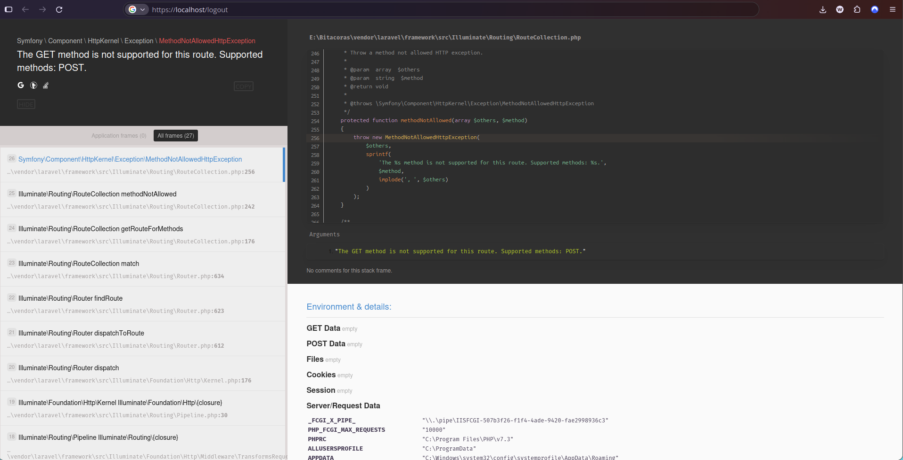

Permintaan dengan HTTP method yang tidak sesuai terhadap route logout, misalnya GET ketika route hanya menerima POST.
01 / Introduction
Apa yang Dimaksud Laravel Logout Leak?
Logout Leak adalah istilah deskriptif yang digunakan dalam dokumentasi ZeroHitman untuk menggambarkan kondisi ketika permintaan ke endpoint logout memicu halaman exception Laravel yang menampilkan informasi internal aplikasi.
Contoh yang dibahas di sini memperlihatkan endpoint /logout menerima atau diakses menggunakan HTTP method GET, sedangkan route tersebut hanya mendukung POST. Laravel menghasilkan MethodNotAllowedHttpException. Masalah keamanan yang perlu diperhatikan bukan semata-mata perbedaan method tersebut, melainkan detail exception yang kemudian ditampilkan kepada pengunjung.
Inti pembedaan: HTTP 405 / Method Not Allowed merupakan respons atas method yang tidak didukung route. Ia bukan otomatis vulnerability. Kebocoran terjadi apabila halaman error yang menyertai respons tersebut mengungkap stack trace, path, environment variables, credential, atau informasi internal lain kepada pihak yang tidak berwenang.
02 / Terminology
Logout Leak Bukan Nama Vulnerability Resmi
Nama “Logout Leak” dibuat agar pola temuan ini mudah diingat dan dibahas di dalam Tree ZeroHitman. Dalam laporan formal, sebaiknya nama tersebut diterangkan dengan istilah teknis yang lebih spesifik, misalnya debug exception information disclosure on logout endpoint.
Framework menghasilkan MethodNotAllowedHttpException untuk menunjukkan method yang tidak didukung.
Exception renderer menampilkan detail internal seperti stack trace atau environment context kepada klien.
Dampaknya bergantung pada informasi yang benar-benar terekspos, keterjangkauan endpoint, dan apakah nilai sensitif masih aktif.
Jangan menyamakan trigger dan impact. Route yang hanya menerima POST adalah perilaku normal. Informasi disclosure merupakan kondisi tambahan yang harus dibuktikan secara terpisah.
03 / HTTP Request
HTTP Method dan Route Logout
HTTP method menyatakan jenis tindakan yang diminta oleh client. Aplikasi dapat mendefinisikan route tertentu hanya untuk method yang telah ditentukan. Pada banyak starter kit Laravel, logout menggunakan POST agar perubahan status autentikasi tidak dilakukan melalui navigasi GET biasa.
| Komponen | Contoh pada kasus | Makna |
|---|---|---|
| Path | /logout | Endpoint yang dituju oleh request. |
| Request method | GET | Method yang digunakan oleh browser/client dalam screenshot. |
| Allowed method | POST | Method yang dinyatakan didukung oleh route. |
| HTTP result | 405 Method Not Allowed | Route dikenali, tetapi method request tidak didukung. |
Perilaku route yang tepat tetap bergantung pada definisi route dan versi aplikasi. Karena itu, jangan menyimpulkan semua aplikasi Laravel memiliki aturan logout yang sama hanya dari satu screenshot.
04 / Exception Handling
MethodNotAllowedHttpException
Laravel menggunakan routing layer untuk mencocokkan request dengan route aplikasi. Jika path cocok tetapi HTTP method tidak termasuk method yang diizinkan, proses routing dapat menghasilkan MethodNotAllowedHttpException. Pesan seperti “The GET method is not supported for this route. Supported methods: POST.” menjelaskan ketidaksesuaian tersebut.
Client Request
|
| GET /logout
v
Laravel Router
|
| Route path ditemukan
| GET tidak termasuk method yang diizinkan
v
MethodNotAllowedHttpException
|
v
Exception Handler / Renderer
|
+---- Production-safe response
| -> Pesan umum, tanpa detail internal
|
+---- Debug detail ditampilkan
-> Stack trace / context dapat terlihat
Catatan analisis: bagian yang menentukan risiko disclosure adalah bagaimana exception ditangani dan dirender. HTTP 405 sendiri tidak membuktikan adanya kebocoran.
05 / Case Study
Membaca Screenshot Temuan
Screenshot berikut berasal dari contoh yang diberikan penulis. Nilai environment yang sensitif telah ditutup untuk mencegah penyebaran credential dan secret. Gambar ini menunjukkan pola tampilan yang dianalisis, bukan bukti bahwa seluruh informasi yang terlihat masih valid atau dapat digunakan.

Bagian kiri: exception dan stack trace
- Terlihat exception
MethodNotAllowedHttpException. - Pesan menyebutkan bahwa method GET tidak didukung dan method POST yang diterima.
- Daftar frame menunjukkan alur pemrosesan request melalui komponen routing dan framework.
- Path file internal dapat mengungkap struktur direktori aplikasi atau lokasi framework.
Bagian kanan: Environment Variables
- Nama variabel seperti
APP_ENV,APP_DEBUG,APP_KEY,DB_HOST,DB_DATABASE,DB_USERNAME, danMAIL_PASSWORDterlihat pada halaman asli. - Nilai variabel tidak ditampilkan di gambar dokumentasi ini karena dapat mengandung secret dan detail infrastruktur.
- Nama variabel saja dapat memberi petunjuk mengenai teknologi dan komponen yang digunakan, tetapi tidak sama dengan memperoleh nilai credential.
Perlindungan bukti: screenshot asli mengandung nilai yang tampak seperti APP_KEY, database credential, mail credential, dan alamat internal. Jangan mengunggah screenshot asli ke repositori publik atau laporan yang tidak dibatasi. Gunakan salinan yang sudah disamarkan dan lakukan rotation terhadap secret jika nilai tersebut masih aktif serta pernah terekspos.
06 / Stack Trace Analysis
Apa yang Bisa Dipelajari dari Stack Trace?
Stack trace merekam rangkaian pemanggilan fungsi yang berkaitan dengan exception. Dalam konteks investigasi, informasi ini membantu memahami framework, komponen routing, lokasi kode, dan titik terjadinya kegagalan.
| Informasi | Nilai analisis | Batasan |
|---|---|---|
| Framework namespace | Membantu mengenali Laravel, Symfony components, atau library lain. | Tidak selalu cukup untuk menentukan versi patch yang tepat. |
| File path | Dapat menunjukkan struktur direktori dan lokasi instalasi. | Path disclosure bukan akses baca file. |
| Application frames | Dapat membantu membedakan kode aplikasi dan kode vendor. | Frame yang terlihat tidak otomatis menunjukkan kelemahan pada frame tersebut. |
| Exception origin | Membantu memahami tahap request yang gagal. | Perlu konteks route dan konfigurasi untuk menentukan akar masalah. |
07 / Environment Disclosure
Environment Variables dan Konfigurasi Aplikasi
Environment variables digunakan aplikasi untuk memisahkan konfigurasi dari source code. Pada Laravel, file .env lazim digunakan untuk menyediakan konfigurasi seperti application key, database connection, mail transport, cache, queue, dan layanan eksternal.
Apabila debug page menampilkan nilai environment, informasi tersebut dapat mengungkap konfigurasi yang seharusnya hanya tersedia di sisi server. Tingkat risikonya berbeda-beda: ada nilai yang hanya memberi konteks, sementara nilai lain merupakan secret yang dapat memberikan akses jika masih valid dan memiliki privilege memadai.
| Variabel / kelompok | Informasi yang mungkin terungkap | Penilaian |
|---|---|---|
APP_ENV, APP_DEBUG | Lingkungan aplikasi dan status debug. | Informasi konfigurasi; dapat membantu memahami kondisi deployment. |
APP_KEY | Application key Laravel. | Secret penting; dampaknya bergantung pada versi, penggunaan, dan mekanisme aplikasi. |
DB_HOST, DB_PORT, DB_DATABASE | Lokasi dan nama database. | Detail infrastruktur; tidak otomatis memberi akses database. |
DB_USERNAME, DB_PASSWORD | Credential database. | Berpotensi kritis jika credential valid, dapat dijangkau, dan memiliki privilege. |
MAIL_HOST, MAIL_USERNAME, MAIL_PASSWORD | Konfigurasi dan credential layanan email. | Dapat memungkinkan penyalahgunaan layanan jika masih aktif. |
| Cloud / API keys | Credential layanan pihak ketiga. | Dampak bergantung pada scope, izin, dan status key. |
Prinsip penting: disclosure nama variabel, disclosure nilai konfigurasi, dan validasi credential adalah tiga tingkat bukti yang berbeda. Laporan harus menyebutkan tingkat yang benar-benar diamati.
08 / Sensitive Data Classification
Memilah Informasi yang Terlihat
Jangan menganggap semua informasi pada debug page mempunyai tingkat sensitivitas yang sama. Klasifikasikan berdasarkan fungsi dan potensi dampaknya.
Nama framework, namespace, route, path, dan versi komponen. Berguna untuk pemetaan, tetapi bukan credential.
Nama database, host, port, driver, mail provider, serta mode aplikasi. Dapat mengungkap arsitektur.
Password, token, API key, APP_KEY, dan secret lain. Perlu perlakuan khusus dan tidak boleh disebarluaskan.
Email, username, alamat internal, request data, dan informasi pengguna. Perlu minimisasi serta redaksi.
09 / Conditions
Kondisi yang Memungkinkan Informasi Terbuka
- Endpoint atau route dapat dijangkau oleh pihak yang tidak semestinya.
- Request memicu exception yang dirender oleh aplikasi.
- Konfigurasi debug atau exception renderer menampilkan detail internal ke response.
- Context yang ditampilkan memuat informasi sensitif, bukan hanya pesan error umum.
- Tidak ada redaction atau pembatasan akses yang memadai pada halaman exception.
Kondisi tersebut harus diperiksa sebagai rangkaian. Debug mode yang aktif saja belum membuktikan bahwa semua secret akan muncul pada setiap exception. Begitu pula exception page yang terlihat belum tentu menampilkan environment variables.
10 / Impact Assessment
Dampak dan Batasan Kesimpulan
| Bukti yang ditemukan | Kesimpulan yang dapat dibuat | Yang belum boleh diasumsikan |
|---|---|---|
| HTTP 405 saja | Route tidak mendukung method request tersebut. | Tidak boleh disebut information disclosure tanpa bukti tambahan. |
| Stack trace dan absolute path | Terjadi debug detail / path disclosure. | Tidak membuktikan file dapat dibaca atau ditulis. |
| Nama environment variables | Konfigurasi aplikasi dapat dipetakan sebagian. | Tidak membuktikan credential telah bocor. |
| Nilai secret tampil | Secret disclosure telah teramati. | Tidak otomatis membuktikan secret masih valid atau memberi akses tertentu. |
| Credential valid dan akses terotorisasi teruji | Dampak akses dapat dijelaskan sesuai scope dan privilege yang terbukti. | Jangan memperluas klaim melampaui sistem dan izin pengujian. |
11 / Investigation Tree
Peta Percabangan Logout Leak
Peta berikut menggambarkan cara mengklasifikasikan informasi dari satu exception page. Setiap cabang adalah kemungkinan arah analisis, bukan tahapan yang pasti terjadi.
GET /logout
|
v
MethodNotAllowedHttpException (405)
|
v
Exception Page Disclosure?
|
+-- Tidak ada detail internal
| +-- Catat HTTP behavior
| +-- Tidak ada bukti information disclosure
|
+-- Stack Trace / Path terlihat
| +-- Framework identification
| +-- Application path disclosure
| +-- Source / version research (jika relevan)
|
+-- Environment Context terlihat
+-- Hanya nama variabel
| +-- Configuration mapping
|
+-- Nilai konfigurasi terlihat
+-- Infrastructure details
+-- Secret exposure (jika nilai sensitif)
+-- Assess validity only within authorization
Hubungan sebab-akibat: request ke logout dapat menjadi pemicu exception; debug rendering dapat menjadi sumber disclosure. Keduanya merupakan lapisan yang berbeda dan perlu dijelaskan terpisah dalam laporan.
12 / Cross-Technique Relationships
Hubungan dengan Teknik Lain
| Informasi / petunjuk | Materi terkait | Hubungan yang masuk akal |
|---|---|---|
| Framework version dan stack trace | Laravel Ignition | Keduanya membahas exception rendering dan debug disclosure. Logout Leak merupakan pola konteks endpoint; Ignition adalah salah satu kemungkinan antarmuka exception. |
| Database host dan konfigurasi query | SQL Injection | Memberi konteks teknologi database. Tidak membuktikan SQLi. |
| Absolute path dan struktur aplikasi | LFI | Dapat membantu memahami path aplikasi. Path disclosure bukan LFI. |
| Framework, dependency, dan path | Source Leak | Dapat menjadi petunjuk untuk meninjau source atau dependency bila tersedia melalui sumber yang sah. |
| Environment / credential exposure | Credential Exposure | Nilai secret yang benar-benar tampil dapat diklasifikasikan sebagai secret disclosure; validitas dan dampaknya harus dinilai terpisah. |
Relasi tersebut tidak otomatis membentuk rantai exploit. Temuan awal hanya membantu menentukan pertanyaan berikutnya. Setiap dugaan harus didukung bukti dan tetap berada dalam ruang lingkup pengujian yang disetujui.
13 / Reporting Method
Cara Menilai dan Melaporkan Temuan
- Catat request: endpoint, HTTP method, waktu, status autentikasi, dan response code.
- Identifikasi exception: catat jenis exception dan pesan yang tampil.
- Klasifikasikan disclosure: pisahkan stack trace, path, nama variabel, nilai konfigurasi, dan secret.
- Minimalkan validasi: jangan mencoba menggunakan credential atau mengakses data yang tidak diperlukan untuk membuktikan temuan.
- Nilai exposure: jelaskan apakah halaman dapat dilihat tanpa autentikasi atau role tertentu.
- Redaksi bukti: tutup password, token, APP_KEY, alamat internal, dan data personal pada screenshot.
- Nyatakan batasan: bedakan fakta yang terlihat dari asumsi tentang akses lanjutan.
Contoh judul laporan: “Laravel Debug Exception Discloses Environment Configuration on Logout Endpoint”. Judul ini lebih informatif daripada menyebut “Logout Bug” saja.
14 / Mitigation
Mitigasi dan Pencegahan
- Pastikan detail exception tidak ditampilkan kepada pengguna pada production; atur
APP_DEBUG=falsedan verifikasi konfigurasi efektif. - Gunakan exception handler yang mengembalikan error page umum kepada client dan menyimpan detail diagnostik pada log server yang aksesnya dibatasi.
- Pastikan route logout menggunakan method dan proteksi CSRF yang sesuai dengan desain aplikasi.
- Jangan menaruh credential atau secret di response, exception message, atau debug context.
- Batasi akses ke log, monitoring, error-sharing service, dan lingkungan staging.
- Jika secret terpapar, lakukan rotation/revocation, tinjau log akses, dan evaluasi potensi penyalahgunaan.
- Pastikan screenshot, tiket, dokumentasi, dan repositori publik menggunakan bukti yang sudah disamarkan.
Referensi konfigurasi Laravel: Laravel Error Handling dan Laravel Routing.
15 / ZeroHitman Summary
Kesimpulan
Contoh Logout Leak memperlihatkan bagaimana request yang menghasilkan error biasa dapat berubah menjadi temuan information disclosure ketika exception page menampilkan detail internal. HTTP 405 hanya menjelaskan bahwa method request tidak didukung oleh route. Risiko tambahannya berasal dari informasi yang ikut dirender kepada client.
Karena itu, analisis perlu memisahkan trigger, exception, disclosure, dan impact. Stack trace, path, nama environment variable, serta nilai secret mempunyai tingkat sensitivitas dan konsekuensi yang berbeda. Jangan menganggap satu temuan otomatis membuka akses ke database, file system, atau remote code execution.
ZeroHitman mindset: ambil informasi yang benar-benar terlihat, klasifikasikan nilainya, tentukan mana yang relevan, lalu gunakan bukti tersebut untuk mengarahkan investigasi berikutnya. Nama teknik membantu mengingat pola; analisis tetap harus mengikuti kondisi nyata.
16 / References